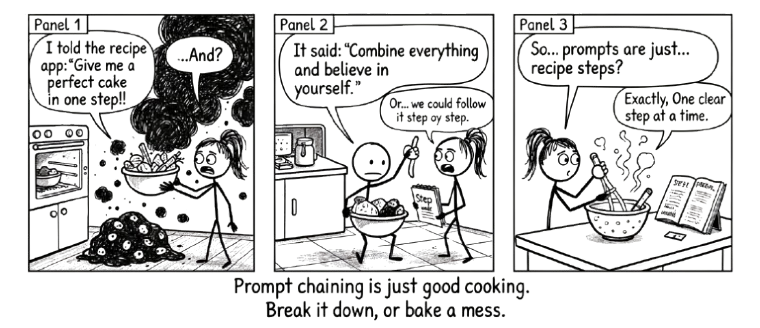

9 Prompt Chaining: Building on What You Started

Complex problems do not have single-prompt solutions. They have conversations.
A single prompt gets you a single response. Sometimes that is enough. Often it is not.
When the work is complex, when it has stages, when the output of one step shapes the next, a single prompt forces the AI to guess the whole path at once. The result is usually broad, shallow, and not quite right. You end up rewriting most of it anyway.
Prompt chaining is the alternative. You break the work into multiple, sequential prompts. Each one builds on the output of the last. Rather than asking AI to do everything at once, you guide it through a structured workflow, checking the results at every stage.
The power of a chain is not in any single link. It is in the pauses between them, where your judgement shapes what comes next.
If this sounds familiar, it should. Prompt chaining is the Iterate stage of the Conversation Loop (Chapter 5) made explicit. Each link in the chain is a moment where you review the output, apply your judgement, and steer what comes next. Without that review step, you are not chaining. You are just queuing up requests and hoping for the best.
9.1 Why It Works
Breaking a task into steps produces better results for the same reasons it works when humans do it.
Smaller steps mean more focused output at each stage, which improves reasoning. You review and adjust after each step, catching problems early rather than discovering them in the final product. You can change direction mid-process without starting over. Each step’s output becomes the next step’s input, so good foundations compound. And because you see the AI’s reasoning at each stage, not just the final product, you stay in the conversation rather than outsourcing it.
9.2 Three Approaches
There is no single right way to chain prompts. The best approach depends on how much control you need and how predictable the process is. Here are three patterns, from least to most interactive.
9.2.1 Approach 1: Guided Workflow
When to use it: You want multi-step processing but prefer to stay in a single prompt.
How it works: Provide all steps upfront with explicit instructions. The AI processes them sequentially and returns structured output.
Example: Research methodology review
You are a research methodologist.
I'm writing a methods section for a paper
on employee retention in remote teams.
Follow these steps:
1. Identify the key variables I need to measure
2. Suggest appropriate data collection methods
3. Outline potential confounding variables
4. Recommend how to control for them
Here's my research question: [Paste research question]
Output each step clearly labelled.This works well when you have a clear process in mind and trust it enough to let the AI work through it in one pass. You still review the output. You just review it all at once rather than step by step.
9.2.2 Approach 2: Sequential Chain
When to use it: You want to review and adjust between steps. Each prompt depends on what the previous one produced.
How it works: Submit one prompt. Review the output. Then submit a follow-up that builds on it.
Example: Writing a proposal
Step 1, Analysis:
I'm writing a funding proposal
for a community health programme.
Here's a summary of the problem
we're trying to address:
[Paste summary]
Analyse this. What are the strongest
arguments for funding? What gaps
in the evidence should I be aware of?Review the output. Note what resonates and what is missing.
Step 2, Structure:
Based on that analysis, outline a proposal structure.
Include sections for: problem statement,
proposed approach, expected outcomes,
and evaluation plan.
For each section, note the key point it should make.Review. Adjust the structure before proceeding.
Step 3, Draft:
Now draft the problem statement
and proposed approach sections.
Use a direct, evidence-informed tone.
Keep it under 800 words total.
Emphasise the points we identified
in Step 1.Review, revise, continue with remaining sections.
The value here is in the pauses. Each review point is a chance to correct course, add something the AI missed, or redirect entirely.
9.2.3 Approach 3: Interactive Chain
When to use it: You want the AI to guide you through a process, pausing for your input at each stage.
How it works: You set up the process, then the AI works through it collaboratively, waiting for your feedback before continuing.
Example: Analysing survey data
You are a research analyst. We're analysing
survey data about workplace satisfaction
across three departments.
Here's how we'll proceed:
1. I'll share the survey summary
2. You identify the top 3 themes
3. I'll respond with feedback
4. You develop deeper analysis of the themes I approve
5. We continue iteratively until complete
Here's the data:
[Paste survey summary]
Start with step 2. Then wait for my
response before continuing.The AI responds with themes. You reply:
“Theme 1 is spot on. Theme 2 needs more nuance. Can you break down the ‘communication issues’ into specific types? For theme 3, I’d like to explore the relationship between workload and satisfaction more deeply.”
The AI refines and waits. You stay in the driver’s seat.
This approach works especially well for analysis and research tasks where you cannot know in advance what the interesting findings will be. The chain emerges from the work itself.
9.3 Practical Templates
These are starting points, not scripts. Adapt them to your work. The structure matters more than the specific wording.
9.3.1 Analysis Chain
For working through data, documents, or any situation that needs structured examination.
Context: [What are we analysing?]
Goal: [What decision or insight do we need?]
Step 1: Summarise [the data, document, or situation]
Step 2: Identify [key patterns, issues, or opportunities]
Step 3: Assess [impact, risk, or significance]
Step 4: Recommend [specific actions or next steps]
Output each step clearly. After step 1, I'll review before
we continue.9.3.2 Argument Chain
For building a case, writing a position paper, or developing a systematic analysis.
Claim: [The main argument or recommendation]
Step 1: Define [key concepts or terms]
Step 2: Provide [evidence or examples]
Step 3: Address [counterarguments or limitations]
Step 4: Synthesise [into a clear position statement]
Output each step with supporting detail.
I'll provide feedback after each step.9.3.3 Planning Chain
For scoping a project, structuring a strategy, or working through any multi-stage plan.
Objective: [What are we trying to achieve?]
Constraints: [Timeline, budget, resources, scope limits]
Step 1: Define [the key deliverables or milestones]
Step 2: Identify [dependencies, risks, and assumptions]
Step 3: Sequence [the work into phases or stages]
Step 4: Detail [the first phase
with specific action items]
Output each step. I'll review and adjust
before we continue.9.4 Advanced Techniques
Once you are comfortable with basic chaining, these techniques let you extract more from the same conversation.
9.4.1 Iterative Refinement
After completing a chain, push deeper without starting over:
“That analysis is helpful. Now go deeper on [specific theme]. Add statistical evidence or examples, implications for [your context], and one alternative perspective.”
This is the Conversation Loop in miniature. You have already iterated once. Now you iterate again, on a narrower target.
9.4.2 Format Shifting
Take the same underlying content and chain it into different formats:
Prompt 1: "Analyse this project data."
[Full analysis request]
[Get detailed analysis]
Prompt 2: "Now turn that analysis into:
- A 2-minute briefing for the executive team
- A one-paragraph update for stakeholders
- A set of action items for the project team"Same thinking, three audiences. The analysis does the heavy lifting. The format shift makes it useful.
9.4.3 Perspective Shifting
Rerun analysis from different viewpoints:
“Now redo that analysis from the perspective of: a new customer encountering this product for the first time, a support team handling complaints, and a competitor evaluating the market. How does each perspective change the recommendations?”
This is one of the most underused techniques. It forces the AI to stress-test its own output, and it often surfaces blind spots you would not have found otherwise.
9.5 Managing Long Conversations
There is a practical reality that prompt chaining runs into: AI has a finite memory.
Every AI conversation has a context window, a limit on how much text the model can hold in its head at once. Early in a conversation, the AI has your full prompt and its full response. Twenty exchanges later, the earliest parts of the conversation are fading. The model does not forget all at once. It loses precision gradually, like a person trying to remember the first thing said in a two-hour meeting.
This matters for chaining because long chains are long conversations. If your chain runs to fifteen or twenty exchanges, the AI may lose track of decisions you made in step two while it works on step twelve. The output starts to drift, contradict earlier work, or quietly drop constraints you set at the beginning.
A few practical habits keep this under control:
Start new conversations for new topics. If your chain is done and you are moving to a different task, open a fresh session. Do not try to do everything in one conversation.
One task per prompt. When you ask the AI to do three things at once, it divides its attention across all three. The result is three shallow responses instead of one deep one. Break it up.
Summarise and hand off. When a conversation is getting long (roughly fifty exchanges or more), ask the AI to summarise everything you have accomplished and decided so far. Copy that summary into a new conversation and continue from there. You reset the AI’s attention without losing the thread.
Make context explicit every time. Do not assume the AI remembers what you said earlier. If a constraint matters for this step, state it again. “Remember, we are working within a six-week timeline and a team of four” takes five seconds to type and prevents the AI from drifting back to generic assumptions.
Watch for signs of drift. If the AI starts contradicting something it said earlier, or produces output that ignores a constraint you set, the context window is likely the problem. Summarise, hand off, and continue in a fresh session.
These are not advanced techniques. They are housekeeping. But they make the difference between a chain that holds together over ten steps and one that quietly falls apart at step six.
Review each step before moving to the next. Without that review, you are not chaining. You are queuing up requests and hoping for the best.
9.6 When Not to Chain
Not every task needs a chain. Skip it when:
- The task is simple. A single clear prompt is more efficient.
- You are exploring, not building. Free-form conversation sometimes beats structured chaining.
- Context is thin. Without enough input, chains do not add much value. Start with a better first prompt instead. RTCF (Chapter 8) helps here.
9.7 Best Practices
- Start clear. Your first prompt sets the direction. Use RTCF framework to structure it.
- Review each step. Do not blindly proceed. Check each output before moving on.
- Provide feedback. Tell the AI what is working and what needs adjustment.
- Build incrementally. Small steps beat big jumps.
- Save your chains. A good chain is reusable. Document the ones that work.
- Know when to stop. Iteration has diminishing returns. Three rounds of refinement usually beats seven.
9.8 Key Takeaways
- Prompt chaining breaks complexity into steps. Each step is simpler and produces better output.
- You maintain control. Review after each step. Adjust direction when needed.
- It works for analysis, writing, planning, and argument-building. Not just content generation.
- Quality compounds. Good output at step 1 becomes better input at step 2.
- It is a conversation. The back-and-forth is where value gets made. Each link in the chain is a chance to think, not just a chance to prompt.
The power of prompt chaining is not in any individual step. It is in how each step builds on the previous one, refining your thinking as you go. That is what makes the output yours, not the AI’s.